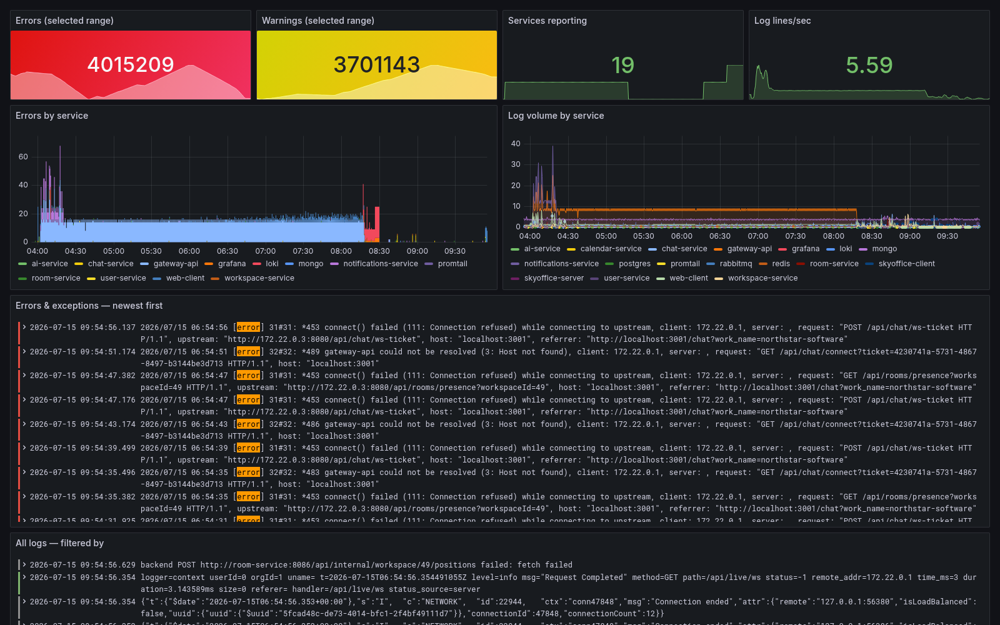
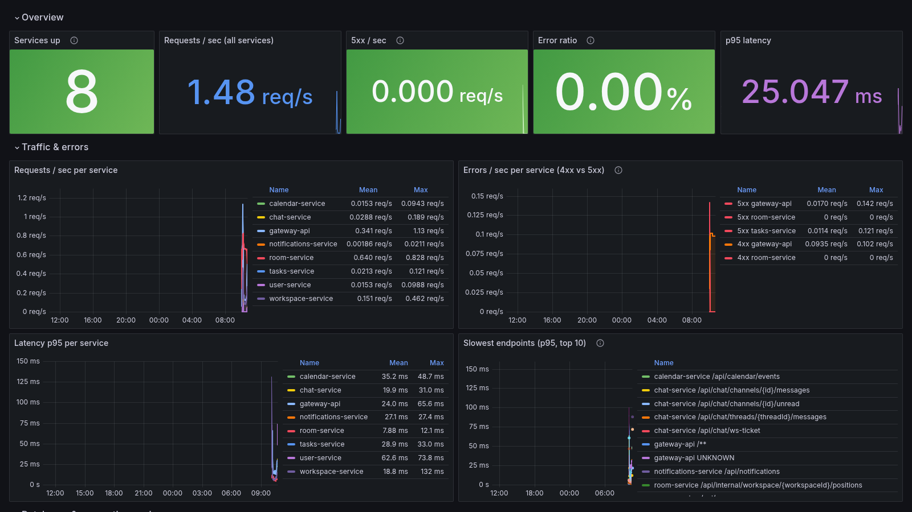

Features / Observability: knowing when it breaks

Observability: knowing when it breaks
BackendNine services means nine docker logs commands to check by hand — instead, every container ships logs to Loki and metrics to Prometheus, both in one Grafana dashboard.

Logs say what happened. Metrics say how often, and how slow — request rates, error ratios and p95 latency per service.
